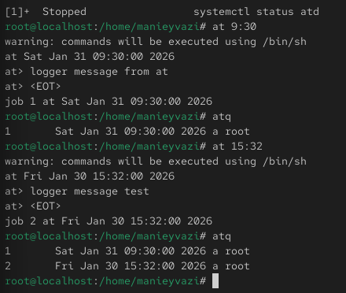
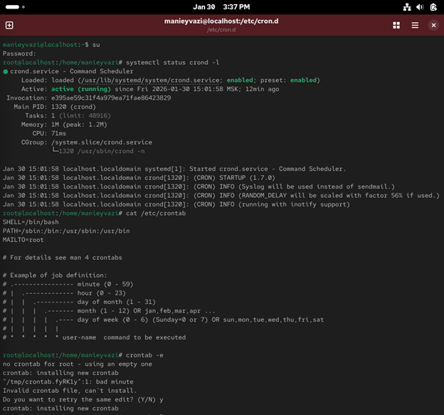
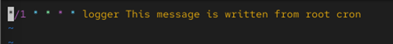
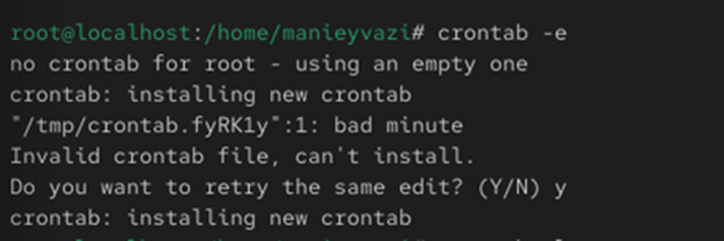
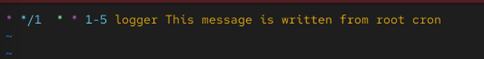
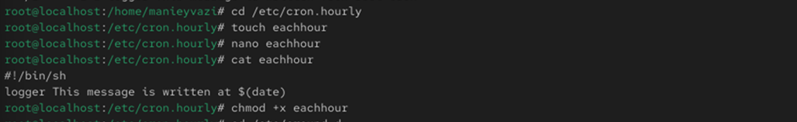
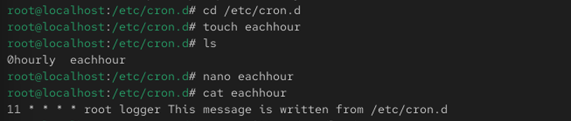
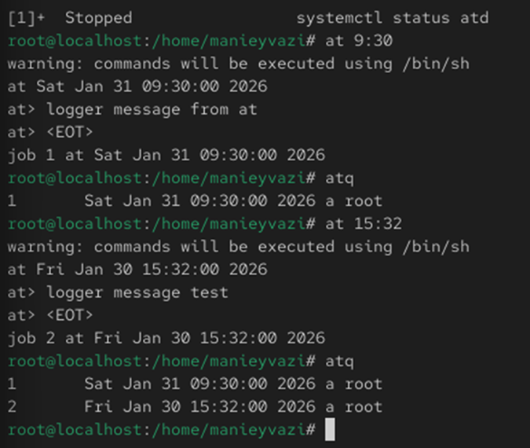

Изучение принципов работы системных планировщиков cron и at, настройка периодических и однократных заданий, анализ выполнения задач через системные журналы.

Рис. 1 — Проверка статуса службы crond
-.

Рис. 2 — Содержимое файла /etc/crontab

Рис. 3 — Редактирование crontab
-.

Рис. 4 — Список заданий и результат в логе
-.

Рис. 5 — Изменение расписания выполнения задачи
-.

Рис. 6 — Создание сценария eachhour в /etc/cron.hourly
-.

Рис. 7 — Создание задания в /etc/cron.d
-.
Рис. 8 — Проверка состояния службы atd
Проверка работы системы.

Рис. 9 — Создание и выполнение задания at
В ходе работы были изучены средства планирования заданий в Linux с помощью утилит cron и at. Были рассмотрены различные способы создания расписаний, системные каталоги /etc/cron.hourly и /etc/cron.d, а также работа с однократными заданиями atd. Закреплены практические навыки администрирования и анализа выполнения системных задач.